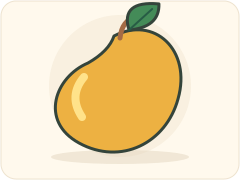
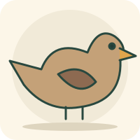
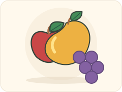

पुस्तक 02 · प्रारंभिक हिंदीशब्द से
शब्द से
अपनी बात तक।
व्याकरण समझें। कहानी पढ़ें। बातचीत करें और स्वतंत्र रूप से लिखें।
Book 02 · Class 1–3 inspired · Independent beginner readerअकआ



4भाग
40अध्याय
80पाठ
40कार्यपत्रक
मेरी प्रगति
0 / 80Saved on this device. No account needed.
प्रवेश: बाल हिंदी या समान वर्णमाला ज्ञान। पहले दो भागों में लिपि और सरल व्याकरण मजबूत करें; फिर बातचीत, पठन और लेखन का स्वतंत्र अभ्यास करें। Draft curriculum; adult guidance and Hindi educator review recommended.
विषय-सूची
Table of contentsभाग 01 · PHASE 1
लिपि और पठन
स्वर, मात्राएँ, वर्तनी और शब्दों से स्वतंत्र पठन।
Script & reading01वर्णमाला की पुनरावृत्ति
Script refresher2 पाठ · 1 कार्यपत्रक
पढ़ें →02
स्वर और मात्राएँ
Vowels and signs2 पाठ · 1 कार्यपत्रक
पढ़ें → 03
03उ, ऊ और ऋ की मात्रा
U, uu and ri2 पाठ · 1 कार्यपत्रक
पढ़ें → 04
04ए, ऐ, ओ और औ
Four more vowel signs2 पाठ · 1 कार्यपत्रक
पढ़ें → 05
05अनुस्वार, चंद्रबिंदु और विसर्ग
Nasal and breath marks2 पाठ · 1 कार्यपत्रक
पढ़ें →06बारहखड़ी और अक्षर निर्माण
Barakhadi2 पाठ · 1 कार्यपत्रक
पढ़ें →07संयुक्त और नुक्ते वाले अक्षर
Conjuncts and nukta2 पाठ · 1 कार्यपत्रक
पढ़ें →08शब्द और वर्तनी
Word building and spelling2 पाठ · 1 कार्यपत्रक
पढ़ें → 09
09शब्द से वाक्य
Sentence basics2 पाठ · 1 कार्यपत्रक
पढ़ें → 10
10पठन और प्रथम पुनरावृत्ति
Reading review2 पाठ · 1 कार्यपत्रक
पढ़ें →भाग 02 · PHASE 2
व्याकरण की नींव
संज्ञा, सर्वनाम, लिंग, वचन, काल और वाक्य संबंध।
Grammar foundations11संज्ञा
Nouns2 पाठ · 1 कार्यपत्रक
पढ़ें → 12
12सर्वनाम
Pronouns2 पाठ · 1 कार्यपत्रक
पढ़ें →13
लिंग
Gender2 पाठ · 1 कार्यपत्रक
पढ़ें →
14वचन
Number2 पाठ · 1 कार्यपत्रक
पढ़ें →15
विशेषण
Adjectives2 पाठ · 1 कार्यपत्रक
पढ़ें →16क्रिया
Verbs2 पाठ · 1 कार्यपत्रक
पढ़ें →17
वर्तमान काल
Present tense2 पाठ · 1 कार्यपत्रक
पढ़ें → 18
18भूत और भविष्य का परिचय
Past and future2 पाठ · 1 कार्यपत्रक
पढ़ें → 19
19परसर्ग और वाक्य संबंध
Postpositions2 पाठ · 1 कार्यपत्रक
पढ़ें →20व्याकरण पुनरावृत्ति
Grammar review2 पाठ · 1 कार्यपत्रक
पढ़ें →भाग 03 · PHASE 3
जीवन की हिंदी
परिचय, विद्यालय, बाज़ार, यात्रा और बातचीत।
Everyday Hindi 21
21मेरा परिचय
Introductions2 पाठ · 1 कार्यपत्रक
पढ़ें →22परिवार और संबंध
Family and relationships2 पाठ · 1 कार्यपत्रक
पढ़ें → 23
23विद्यालय और पढ़ाई
School and study2 पाठ · 1 कार्यपत्रक
पढ़ें →24संख्या, समय और दिन
Numbers and time2 पाठ · 1 कार्यपत्रक
पढ़ें →25
भोजन और रसोई
Food and kitchen2 पाठ · 1 कार्यपत्रक
पढ़ें → 26
26बाज़ार और खरीदारी
Shopping2 पाठ · 1 कार्यपत्रक
पढ़ें →27रास्ता और यात्रा
Directions and travel2 पाठ · 1 कार्यपत्रक
पढ़ें →28
स्वास्थ्य और शरीर
Health and body2 पाठ · 1 कार्यपत्रक
पढ़ें →29
ऋतु और प्रकृति
Weather and nature2 पाठ · 1 कार्यपत्रक
पढ़ें →30दैनिक संवाद और पुनरावृत्ति
Daily communication review2 पाठ · 1 कार्यपत्रक
पढ़ें →भाग 04 · PHASE 4
पठन और अभिव्यक्ति
कहानी, कविता, अनुच्छेद, पत्र और अंतिम अभ्यास।
Reading & expression
 31
31समानार्थी और विपरीत शब्द
Synonyms and antonyms2 पाठ · 1 कार्यपत्रक
पढ़ें →32अव्यय और वाक्य जोड़ना
Connectives2 पाठ · 1 कार्यपत्रक
पढ़ें →33विराम चिह्न और संवाद लेखन
Punctuation and dialogue2 पाठ · 1 कार्यपत्रक
पढ़ें →34पठन-बोध: सूचनाएँ
Reading notices2 पाठ · 1 कार्यपत्रक
पढ़ें → 35
35पठन-बोध: कहानी
Reading a story2 पाठ · 1 कार्यपत्रक
पढ़ें → 36
36कविता और भाषा
Poetry2 पाठ · 1 कार्यपत्रक
पढ़ें →37अनुच्छेद लेखन
Paragraph writing2 पाठ · 1 कार्यपत्रक
पढ़ें →38पत्र और संदेश
Letters and messages2 पाठ · 1 कार्यपत्रक
पढ़ें → 39
39स्वतंत्र अभिव्यक्ति
Independent expression2 पाठ · 1 कार्यपत्रक
पढ़ें →40अंतिम अभ्यास और अगली किताब
Final review2 पाठ · 1 कार्यपत्रक
पढ़ें →अब आगे क्या?
अंतिम अध्याय में अपने पढ़ने, लिखने, बोलने और सुनने का अभ्यास जाँचें।
अंतिम अभ्यास → अगली किताब · मौजूदा मध्यम पाठ